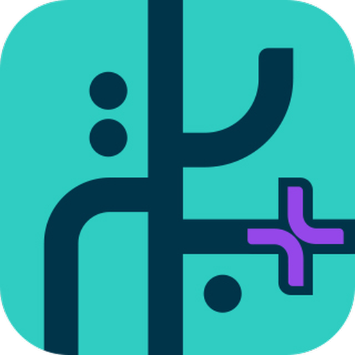
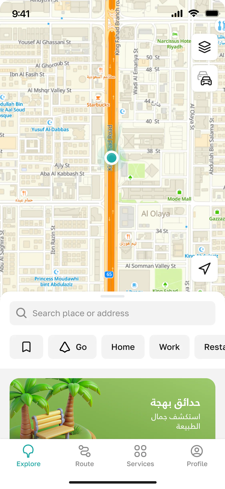
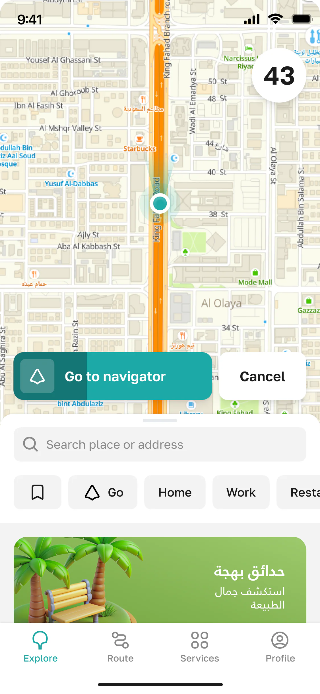
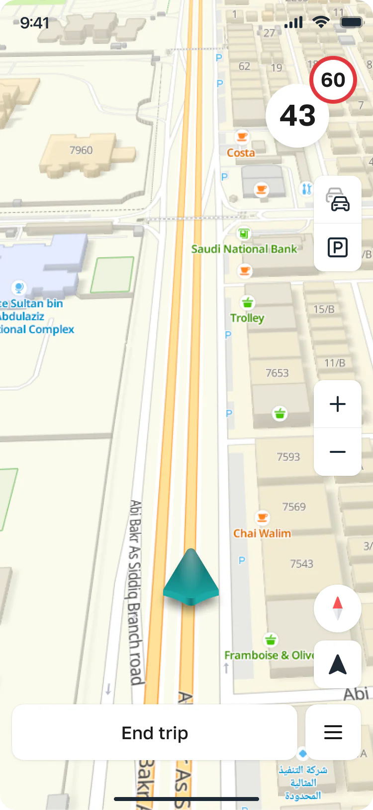
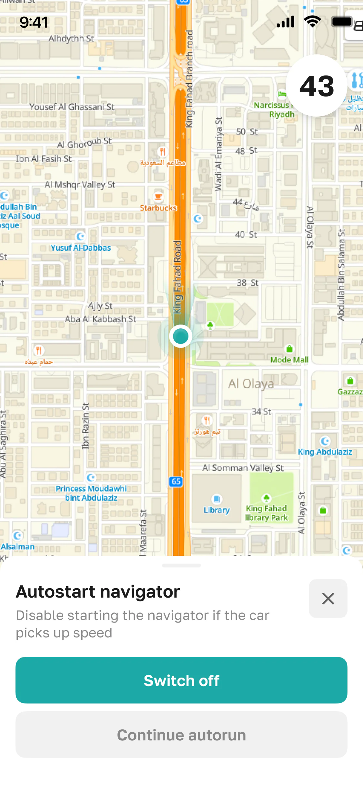
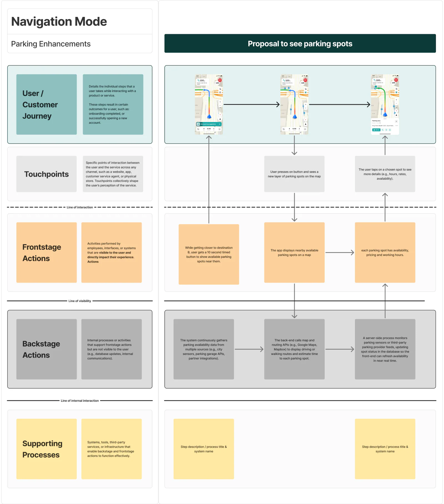
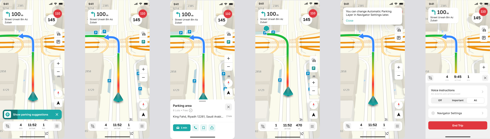
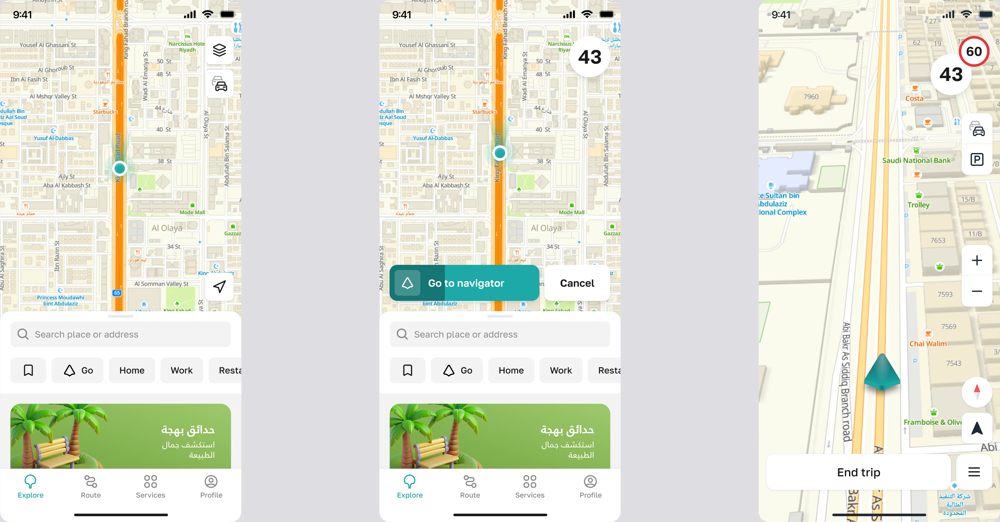
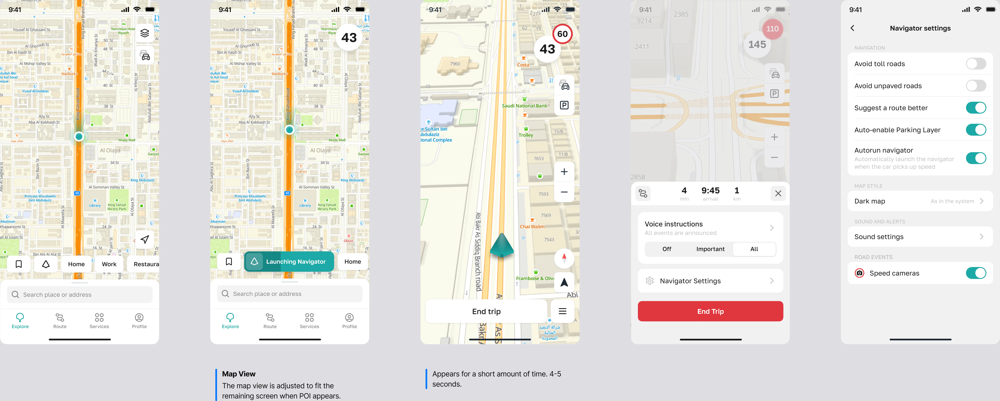

خرائط Balady+
أعدت تصميم تجربة التنقل في التطبيق الحكومي الرسمي للخرائط في السعودية، فتحول من أداة للوصول إلى وجهة فقط إلى تجربة خرائط سلسة لآلاف المستخدمين.
مصمم للمدينة، ومبني للجميع




من أين بدأ كل شيء
Balady+ هو التطبيق الحكومي الرسمي للخرائط والخدمات البلدية في السعودية. يستخدمه آلاف الأشخاص للتنقل في المدن، والإبلاغ عن المشكلات، والوصول إلى الخدمات الحكومية.
ركز دوري على تجربتين أساسيتين: إعادة تصميم رحلة المواقف، وإضافة ميزة التجول الحر التي تتيح استكشاف الخريطة دون تحديد وجهة.
بقيت المشكلتان دون حل لفترة طويلة، وكل منهما جعلت استخدام الخريطة أصعب مما يجب.
ما الذي كنت أحاول حله
الهدف أن تصبح الخريطة مساحة تتحرك فيها بحرية، لا أداة لإنجاز مهمة فقط، وأن تبقى سلسة سواء كنت تتنقل أو تستكشف.
لماذا يجب أن أدخل وجهة لمجرد أن أتصفح الخريطة؟
لماذا يبدو الأمر أصعب مما يجب؟
تحديات التصميم الأساسية
- إضافة الاستكشاف دون تعطيل رحلة الملاحة
- تسهيل إيجاد المواقف والدفع لها
- إبقاء المستخدم على الخريطة دون الانتقال إلى شاشات أخرى
"لم تكن هذه مشكلات واجهة منفصلة. كانت تعكس فجوة أساسية بين الطريقة التي يريد المستخدمون التعامل بها مع الخريطة وطريقة تصميم التطبيق."
استنتاج تصميمي من مرحلة الاستكشاف في Balady+
كيف تعاملت مع المشروع
قبل أن أصمم أي شيء، رسمت رحلة المستخدم كاملة في كل حالات الملاحة لأفهم أين تتعثر التجربة ولماذا. وصار مخطط الخدمة الأساس للميزتين.
الرحلة
-
الاستكشاف والبحث الميداني
راقبت جلسات ملاحة حقيقية وقابلت مستخدمين لأفهم أين تبدو التجربة غير طبيعية.
-
مخطط الخدمة
رسمت رحلة الملاحة كاملة لأحدد أين تتعثر تجربتا المواقف والاستكشاف.
-
تصميم الحل
صممت تجربتي المواقف والتجول الحر معاً، وأبقيتهما مرتبطتين بالخريطة المباشرة.
-
النماذج الأولية والاختبار
اختبرت النماذج مع مستخدمين حقيقيين للتأكد من رحلة المواقف والانتقال إلى التجول الحر قبل الإطلاق.
-
الإطلاق
وصلت التجربتان إلى آلاف المستخدمين في السعودية.
مخطط الخدمة
رسمت رحلة المستخدم كاملة في كل حالات الملاحة لأحدد أين تتعثر التجربة ولماذا. فصار لدى الفريق فهم مشترك للمشكلة قبل البحث عن أي حل.

تحسينات المواقف
إيجاد موقف من أكثر الاحتياجات شيوعاً في المدينة. الرحلة الجديدة تعرض لك اقتراحات المواقف على مسارك مباشرة. اضغط لترى المواقف القريبة مع الأماكن المتاحة والمسافة والسعر، ثم غير مسارك إلى الموقف الذي تختاره بضغطة واحدة، دون أن تغادر الخريطة.

وضع التجول الحر
وضع استكشاف جديد يتيح لك تصفح الخريطة دون وجهة محددة. الانتقال بين التجول الحر والملاحة سلس: اضغط على أي مكان يهمك لتحصل على الاتجاهات، أو اضغط على زر الملاحة لتبدأ من موقعك الحالي.

أدوات التحكم في التجول الحر
مجموعة صغيرة من أدوات التحكم تجعل الاستكشاف سهلاً: العودة إلى موقعك، والتكبير، وتبديل الطبقات، كلها في متناول إبهامك دون أن تزحم الخريطة. تختفي الأدوات عندما تتحرك، وتعود فور توقفك لتنظر حولك.

ما الذي حدث بعد ذلك
وصلت التجربتان إلى كل أنحاء السعودية، في تطبيق يخدم 3.7 مليون مواطن.
- التجول الحر أضاف طريقة استخدام جديدة: الاستكشاف دون وجهة
- رحلة المواقف صارت جزءاً من الخريطة: لا شاشة إضافية ولا مغادرة للخريطة
- توفر المواقف والدفع يظهران مباشرة على الخريطة
- انتقال سلس بين الاستكشاف والملاحة
نظرة إلى الوراء
ما بدأ طلبين منفصلين لميزتين تحول إلى إعادة تفكير في ما يمكن أن يكون عليه تطبيق خرائط حكومي.
أكبر تحول في التصميم كان إدراك أن الخريطة منتجان في منتج واحد: أداة ملاحة ومساحة استكشاف. والتحدي الحقيقي كان التصميم لهما معاً دون أن يتعارضا.
أكد لي المشروع أن كبر الحجم لا يجعل التصميم أصعب، بل يجعل الوضوح أهم.
تريد مناقشة التفاصيل؟
يسعدني أن أشرح لك البحث وقرارات التصميم وما لم يصل إلى النسخة النهائية.
تواصل معي